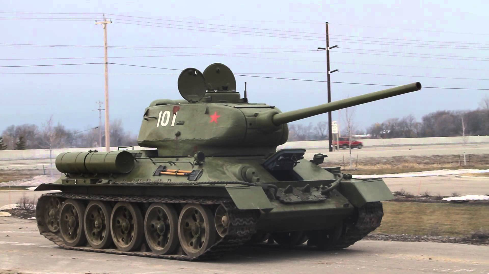

The Soviet Union ended the 1930s with a huge fleet of tanks almost completely derived from foreign designs, but before 1941 developed some of the most important trend-setting tanks of the war. The problem the Soviet tank force faced in 1941 was not primarily the technical quality of its vehicles, but the very poor state of maintenance, the appalling lack of readiness, and the poor command situation brought on by the purges of the officer class. The Red Army had adopted in 1940 an advanced doctrine that it was simply incapable of executing.
These are the most famous tanks from the Soviet Union during ww2:
This is the T-34.

The T-34 was the mainstay of Soviet armoured forces throughout the Second World War. Its design allowed it to be continuously refined to meet the constantly evolving needs of the Eastern Front: as the war went on it became more capable, but also quicker and cheaper to produce. Soviet industry would eventually produce over 80,000 T-34s of all variants, allowing steadily greater numbers to be fielded as the war progressed despite the loss of thousands in combat against the German Wehrmacht. The tank was so good that the germans called it "the finest tank in the world" and even captured some of them. The early variants of the T-34 was equipped with a 76,2mm F34 tank gun which was later replaced with a 85mm ZiS S-53 gun. The tank had a Model V-2-34 38.8 L V12 Diesel engine to move the 26,5 ton machine at a speed of 53km/h.The hull of the tank had an armorthickness of 47mm sloped at a 60° at the front, 40mm at a slope of 41° on the sides and 45mm rear armour. The turret had an armorthickness of 60mm at the front, 52mm on the sides and 30mm of rear armour.
(Work in progress!)